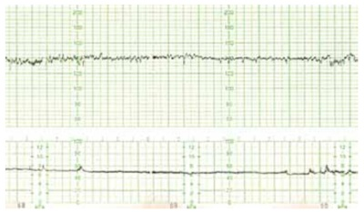

Questão 1 · Abstinência de Álcool · 4000166321Homem, 42 anos de idade, é trazido pelo SAMU ao PS, restrito à maca, por estar agitado e falando sozinho na rua. Trata-se de um morador de rua, com trajes sujos e higiene pessoal precária. Está muito agitado, confuso, desorientado no tempo e no espaço, assustado, fala de uma perseguição e refere ver bichos e vultos. Exame físico: desidratado 2+/4+, descorado 2+/4+, temperatura 37,8 ºC, FC = 108 bpm, sudorese profusa e tremores grosseiros das mãos; roncos e estertores na base do hemitórax esquerdo. Qual é a conduta imediata mais adequada?
A Manter a contenção física, glicose hipertônica IV, haloperidol IM.
B Manter a contenção física, hidratação IV, tiamina IV, diazepam IV.
C Retirar a contenção física, exames laboratoriais e de imagem, antibioticoterapia.
D Retirar a contenção física, prometazina IM, hidratação IV.
Questão 2 · Transtorno Psicóticos · Esquizof renia · 4000166320Homem, 20 anos de idade, é levado ao PS por episódio de agressividade há 1 dia. A mãe refere que ele passou a car mais calado e isolado, há 8 meses. Ele abandonou o emprego, pois se sentia desconfortável com os colegas, alegando que comentavam sobre ele e queriam lhe prejudicar frente ao chefe. Passou a escutar vozes, que o xingavam em alguns momentos, falava coisas sem sentido e tinha crises de choro. Chegou a relatar a sua mãe que pensava em se jogar na frente do trem para acabar com seu sofrimento. Vem progressivamente piorando. Faz uso regular de maconha há 1 ano, sendo o último consumo há 2 meses. Qual é o diagnóstico mais provável?
A Episódio depressivo grave, com sintomas psicóticos.
B Transtorno psicótico induzido por drogas (
C Esquizofrenia paranoide.
D Transtorno delirante persistente.
Questão 3 · Tratamento · Manejo inicial e pacotes · 4000166319Mulher, 25 anos de idade, refere disúria e polaciúria há 6 dias, evoluindo com dor lombar e febre, com necessidade de internação. Sem doenças prévias. Ao exame físico, apresenta-se torporosa, com temperatura de 38ºC, PA = 80/60 mmHg, FC = 110 bpm, FR = 24 irpm. Após expansão volêmica e coleta de hemocultura e urocultura, qual é a estratégia de tratamento antimicrobiano mais adequada?
A Combinação de antibióticos para cobertura de bactérias gram-negativas multirresistentes.
B Por se tratar de paciente jovem e sem comorbidades, pode-se aguardar os resultados das culturas para o início da terapia antimicrobiana.
C Antibiótico de amplo espectro na primeira hora de evolução, considerando cobertura para bactérias gram- negativas.
D Cobertura para agentes multirresistentes por conta da gravidade, seguida de escalonamento com os resultados da hemocultura e/ou urocultura.
Questão 4 · Prevenção · COVID 19 · 4000166318Mulher, 68 anos de idade, está internada na UTI por covid-19 no 9º dia de início de sintomas, sob ventilação mecânica. RT- PCR positivo para doença no 4º dia de sintomas. A recomendação adequada quanto a duração do isolamento respiratório é
A isolamento por 20 dias desde o início dos sintomas e há pelo menos 24 horas sem febre.
B isolamento por 14 dias como recomendado a todos pacientes com covid-19.
C isolamento por 10 dias após a data do primeiro teste RT-PCR positivo.
D isolamento até a negativação do RT-PCR coletado a cada 3 dias.
Questão 5 · Glaucoma · Of talmologia · 4000166317Mulher, 75 anos de idade, queixa-se de dor ocular de forte intensidade à direita, associada a náuseas e piora da acuidade visual no mesmo olho há um dia, que não melhorou com analgésicos. Não apresenta nenhum antecedente clínico, cirúrgico e oftalmológico, exceto por uso de óculos desde a infância. Exame físico: olho direito com hiperemia de vasos conjuntivais; olho esquerdo sem alterações. Qual é o diagnóstico mais provável e a conduta mais adequada?
A Úlcera de córnea; tampão com cicatrizante.
B Conjuntivite viral; investigação de covid-19.
C Esclerite; colírio com corticoide.
D Glaucoma agudo; iridotomia a LASER em ambos os olhos.
Questão 6 · Síndrome Demencial · Neurologia · Estado Conf usional Agudo Delirium · 4000166316Mulher, 75 anos de idade, chega ao PS acompanhada por familiar devido a alteração de comportamento iniciado há dois dias. Já está em seguimento com o geriatra há 3 anos por di culdade de realizar as atividades domésticas, confundindo o nome de pessoas, com discurso repetitivo e bastante esquecida. Exame físico: inquieta, desatenta durante a consulta e sem déficits motores. O diagnóstico mais provável do quadro de base e do quadro agudo são, respectivamente:
A depressão crônica e quadro infeccioso sem foco aparente.
B comprometimento cognitivo leve e acidente vascular cerebral.
C doença de Alzheimer e primeiro episódio psicótico.
D síndrome demencial e
Questão 7 · Nef rologia · Etiologia Prérenal · 4000166315Homem, 69 anos de idade, procura o PS com queixa de diarreia líquida iniciada há 4 dias e redução do volume urinário nas últimas 24 horas. Faz acompanhamento clínico para tratamento de insu ciência cardíaca em uso de carvedilol, enalapril e furosemida. Exames laboratoriais: creatinina = 1,5 mg/dL (VR: 0,8-1,2 mg/dL); ureia = 90 mg/dL (VR: 20-45 mg/dL); potássio = 4,9 mEq/L (VR: 3.5-5.0 mEq/L). Urina I: densidade 1.035 (VR: 1.005-1.030), presença de grande quantidade de cilindros hialinos, sem outras alterações. Fração de excreção urinária de sódio de 3% e fração de ureia: 28%. O diagnóstico mais provável é
A necrose tubular aguda tóxica.
B necrose tubular aguda isquêmica.
C lesão pré-renal por hipoperfusão.
D nefrite intersticial aguda.
Questão 8 · Nef rologia · Nef ropatia por IgA · 4000166314Homem, 28 anos de idade, previamente hígido, há 3 dias apresenta urina escura e edema de membros inferiores, iniciados 1 dia após quadro de odinofagia. Ao exame físico: afebril, PA = 150/100 mmHg, FC = 89 bpm, FR = 17 irpm, SpO₂ = 98%. Exames laboratoriais: creatinina sérica =1,4 mg/dL; exame de urina I com 1,2 g/L de proteína, hemácias = 296.000/campo (normal até 10/campo), dismor smo eritrocitário presente e leucócitos = 08/campo (normal até 10/campo). RT-PCR para SARS-CoV-2 negativo; níveis de complemento sérico C3 = 120 mg/dL (VR: 90-180 mg/dL), C4 = 37 (VR: 15-53 mg/dL) e CH50 = 125 U/CAE (VR: 60-165 U/CAE). Qual é o diagnóstico mais provável?
A Nefropatia por imunoglobulina A.
B Nefrite por lúpus eritematoso sistêmico.
C Glomerulonefrite da crioglobulinemia.
D Glomerulonefrite pós-estreptocócica.
Questão 9 · Tratamento · 4000166313Das medidas terapêuticas a seguir, aquela que tem maior impacto na redução da mortalidade por choque anafilático é
A expansão volêmica.
B precocidade na administração de adrenalina.
C associação de bloqueador H1 e bloqueador H2.
D precocidade na administração de corticosteroide.
Questão 10 · Tratamento · 4000166312Homem, 34 anos de idade, apresenta há 3 dias tosse com expectoração amarela, sem sangue, dor torácica posterior direita que piora com a tosse ou respiração profunda, e sem falta de ar. Previamente saudável, refere alergia na infância com uso de sulfa, amoxacilina e anti-inflamatórios não hormonais. Exame físico: febril (38,9 ºC), PA = 110 / 80 mmHg, FC = 88 bpm, FR = 16 irpm, SpO₂ 97% em ar ambiente, presença de estertores nos na base pulmonar direita, sem outras alterações. Radiografia de tórax: consolidação em lobo inferior direito. Qual é a conduta mais adequada?
A Quinolona respiratória por via oral.
B Macrolídeo ou betalactâmico por via oral.
C Ceftriaxone e claritromicina por via intravenosa.
D Piperacilina-tazobactam por via intravenosa.
Questão 11 · Tratamento geral da crise hipertensiva · Cardiologia · 4000166311Mulher, 25 anos de idade, é atendida no PS com PA = 180/100 mmHg após ter utilizado cocaína. Nega comorbidades e não apresenta disfunções orgânicas. Qual é a droga de escolha para tratar essa urgência hipertensiva?
A Captopril.
B Nitroprussiato de sódio.
C Propranolol.
D Diazepam.
Questão 12 · Neurologia · Fatores de Risco e Predisponentes · 4000166310Diversos medicamentos usados na prática clínica em doses habituais podem provocar alternativa que, segundo os critérios de Beers, apresenta fármacos a serem evitados em idosos pelo potencial risco de confusão mental.
A Benzodiazepínicos e inibidores de bomba protônica.
B Anti-histamínicos de primeira geração e inibidores da acetilcolinesterase.
C Antidepressivos tricíclicos e relaxantes musculares.
D Antipsicóticos e inibidores seletivos da recaptação de serotonina.
Questão 13 · Diagnóstico da anemia f erropriva · 4000166309Mulher, 30 anos de idade, G6P5A1, apresenta queda de cabelos, unhas quebradiças e intensa fraqueza. O hemograma evidenciou: Hb = 3,5 g/dL e plaquetas = 750.000/mm³, além de saturação da transferrina de 6%. O diagnóstico mais provável é
A talassemia major.
B anemia ferropriva.
C anemia ferropriva com trombocitemia essencial concomitante
D anemia ferropriva com síndrome mieloproliferativa crônica.
Questão 14 · Neurologia · Semiologia Neurológica · 4000166308Mulher, 75 anos de idade, independente funcional e com autonomia, refere que, recentemente, vem apresentando marcha muito instável, com muitos tropeços e tendência a quedas. Antecedente de etilismo. No exame físico, observa-se que, ao car em pé, seus pés cam afastados e há importante desequilíbrio dinâmico. Teste de Romberg: negativo. Qual é a hipótese mais provável?
A Desequilíbrio relacionado a marcha ceifante que é típica do paciente com Doença de Parkinson.
B Desequilíbrio relacionado à propriocepção, pois é uma paciente etilista com provável lesão nervosa dos músculos envolvidos no levantamento dianteiro do pé.
C Marcha escarvante devida à diminuição da flexão e extensão dos membros inferiores, resultando em abdução exagerada do membro durante a marcha.
D Marcha atáxica que deve ter relação com lesão cerebelar, que muitas vezes está presente em pacientes etilistas.
Questão 15 · Tratamento de manutenção da asma · Pneumologia · 4000166307Mulher, 22 anos de idade, com asma desde a infância, está em uso regular e adequado de budesonida 200 mcg duas vezes ao dia. Nega exacerbação da doença no último ano, mas nas últimas 4 semanas, refere falta de ar ao caminhar, acordando pelo menos uma vez à noite com peito apertado. Tem usado broncodilatador de resgate 2-3 vezes por semana conforme orientado na última consulta. O escore do Teste de Controle da Asma (ACT) foi 18. A mais adequada conduta farmacológica é
A associar prednisona oral 40 mg ao dia, por 5 dias.
B aumentar a dose de budesonida para 400 mcg, 2 vezes ao dia.
C associar formoterol 12 mcg e aumentar budesonida para 400 mcg, 2 vezes ao dia.
D manter a dose de budesonida de 200 mcg, 2 vezes ao dia.
Questão 16 · Diagnóstico da púrpura trombocitopênica imunológica PTI · 4000166306Mulher, 75 anos de idade, procurou o PS com petéquias e equimoses pelo corpo, gengivorragia e epistaxe. Refere vacinação para in uenza há 15 dias. O hemograma mostrou plaquetas de 5.000/mm³ (VR 150.000-450.000) sem anemia ou leucocitose/leucopenia. O mielograma evidenciou medula normal com aumento da série megacariocítica. Qual é o diagnóstico mais provável?
A Púrpura trombocitopênica trombótica.
B Púrpura de Henoch-Schönlein.
C Púrpura trombocitopênica imune.
D Coagulação intravascular disseminada.
Questão 17 · Ginecologia · Hiperprolactinemia · 4000166305Mulher, 32 anos de idade, apresenta amenorreia há 6 meses e as seguintes dosagens hormonais: prolactina = 76 ng/mL (VR até 30 ng/mL), FSH = 2 U/L (VR 2,5 a 10 U/L na fase folicular). A alternativa que contém as hipóteses diagnósticas mais prováveis é:
A adenoma hipofisário não secretor; menopausa precoce.
B prolactinoma; uso crônico de losartana.
C adenoma hipofisário não secretor; uso crônico de glicazida.
D prolactinoma; hipotireoidismo primário.
Questão 18 · Critérios diagnósticos de osteoporose critério densitométrico eou critério clínico · 4000166304Além da densidade mineral óssea, avaliada pela densitometria, a osteoporose pode ser diagnosticada por
A presença de fratura por fragilidade.
B trabecular bone score (TBS).
C ultrassom de calcâneo.
D tomografia computadorizada quantitativa de alta resolução.
Questão 19 · Avaliação dos pacientes com monoartrite · 4000166303Homem, 60 anos de idade, comparece ao PS com monoartrite de joelho direito e febre de 38ºC há dois dias. Nos últimos dois anos, apresentou episódios recorrentes de artrite de primeira metatarsofalangiana, com duração de 3 a 7 dias. É etilista (três latas de cerveja ao dia) e hipertenso. Está em uso irregular de enalapril 10 mg, hidroclorotiazida 25 mg e alopurinol 300 mg. A melhor conduta nesse caso é
A prescrever cefuroxima, manter uso diário do alopurinol e colchicina em caso de dor.
B dar orientações de uso do alopurinol diariamente e controle do ácido úrico.
C fazer artrocentese e enviar o líquido sinovial para análise por suspeita de artrite infecciosa.
D prescrever colchicina, anti-inflamatório não hormonal e reavaliar em 48 horas.
Questão 20 · Outras taquiarritmias · 4000166302Mulher, 28 anos de idade, sem antecedentes patológicos, procurou PS com queixa de palpitações de início súbito, sem outros sintomas associados, há 1 hora. Ao exame físico, PA = 110 x 70 mmHg, FC = 170 bpm, SpO₂ = 99%. ECG de admissão a seguir. Qual é o tratamento indicado?

A Amiodarona intravenosa.
B Betabloqueador intravenoso.
C Cardioversão elétrica.
D Adenosina intravenosa.
Questão 21 · Intervenção coronariana percutânea no tratamento do IAMCSST · Cardiologia · 4000166301Paciente com infarto agudo do miocárdio é atendido em PS de hospital que não dispõe de serviço de hemodinâmica. A conduta imediata mais adequada é
A trombólise farmacológica e transferência para hospital com serviço de hemodinâmica se não houver sinais de reperfusão.
B remoção para hospital com serviço de hemodinâmica desde que seja possível chegar ao local em até 120 minutos
C trombólise farmacológica e transferência programada para realização de cateterismo após 48 horas.
D remoção para hospital com serviço de hemodinâmica com início de trombólise farmacológica durante o transporte.
Questão 22 · Gastroenterologia · Hepatobiliares · 4000166300Homem, 34 anos de idade, apresenta níveis de fosfatase alcalina persistentemente elevados. Retocolite ulcerativa diagnosticada há 3 anos. Exame físico e demais exames laboratoriais sem alterações. Qual é o diagnóstico que melhor explica a alteração apresentada?
A Calculose biliar.
B Colangite esclerosante primária.
C Hepatite medicamentosa.
D Hepatite autoimune.
Questão 23 · Larva migrans · 4000166299Homem, 25 anos de idade, apresenta lesões lineares salientes e eritematosas no pé direito há 2 semanas. Qual é o diagnóstico mais provável?
A Tungíase.
B Cercariose.
C Ancilostomose.
D Miíase.
Questão 24 · Constipação · 4000166298Menino, 8 anos de idade, com história de perder fezes nas roupas há 1 ano. Evacua 2 vezes na semana, fezes que entopem o vaso sanitário. Ao exame físico, apresenta-se eutró co, presença de massa abdominal palpável em hipogástrio e toque retal com grande quantidade de fezes endurecidas na ampola retal que se encontra ampla. A conduta inicial considerando o diagnóstico clínico é
A prescrever desimpactação, considerando o diagnóstico de impactação fecal secundária à constipação intestinal funcional.
B prescrever laxativo oral em dose de manutenção, considerando o diagnóstico de constipação intestinal funcional.
C solicitar ultrassonografia abdominal, considerando que a impactação fecal indica constipação intestinal orgânica.
D encaminhar para cirurgião pediátrico, considerando a gravidade do caso e provável diagnóstico de doença de Hirschsprung.
Revisar: possível letra faltando em enunciado
Questão 25 · Pediatria · Tratamento · 4000166297Menino, 8 anos de idade, com diagnóstico de obesidade e antecedente de hipodisplasia renal bilateral, apresenta clearance de creatinina de 85 ml/min/1,73 m² (estável nas últimas 3 consultas) e microalbuminúria de 24 horas de 550 mg. Nas últimas 3 consultas, vem mantendo níveis tensionais acima do percentil 95 + 12 mmHg. Realizou fundo de olho e ecocardiograma, sem alterações. Qual seria a classe de anti-hipertensivos mais indicada para esse paciente?
A Betabloqueador.
B Bloqueador de canal de cálcio.
C Diurético tiazídico.
D Inibidor da enzima conversora de angiotensina.
Questão 26 · Cef aleias Secundárias · Neurologia · Cef aleia nos Tumores Cerebrais · 4000166296Menina, 5 anos de idade, é levada ao PS após uma primeira crise convulsiva generalizada. Na anamnese, mãe refere que a criança apresenta cefaleia matinal e vômitos há 4 meses. O plantonista solicitou tomogra a de crânio que diagnosticou um tumor. Considerando o diagnóstico dessa criança, é correto afirmar:
A a localização mais comum desse tumor é na fossa posterior.
B crises convulsivas são a manifestação clínica mais frequente.
C na radiografia de crânio, foram encontradas lesões líticas na calota craniana.
D as metástases ocorrem principalmente para o pulmão.
Questão 27 · Transição da circulação f etal para a neonatal · Pediatria · 4000166295Você está diante de um recém-nascido a termo que acabou de nascer de parto vaginal sem intercorrências. Esse bebê apresenta choro vigoroso e, com cerca de 2 minutos, o obstetra realiza o clampeamento do cordão umbilical. Assinale a alternativa com a melhor descrição das alterações cardiorrespiratórias que estão ocorrendo nesse momento.
A O clampeamento do cordão aumenta o shunt direito esquerdo pelo canal arterial e forame oval.
B O clampeamento do cordão aumenta o retorno venoso para as câmaras esquerdas.
C O choro vigoroso auxilia na reabsorção do líquido pulmonar e faz com que a resistência vascular pulmonar diminua.
D O choro vigoroso mantém o forame oval aberto para garantir o débito do ventrículo esquerdo.
Questão 28 · Pediatria · Diagnóstico Nutricional · 4000166294Menino, 4 anos e 4 meses, apresenta escore Z de estatura para idade (E/I) de + 0,86 e de Índice de Massa Corporal de + 2,78. Com esses dados, o diagnóstico nutricional é de
A risco de sobrepeso.
B sobrepeso.
C eutrofia.
D obesidade.
Questão 29 · Pediatria · Aspectos Clínicos Quadro clínico · 4000166293Na pneumonia na infância, quais características semiológicas sugerem etiologia por
A Ausência de febre, taquidispneia leve, derrame pleural.
B Idade pré-escolar, insuficiência respiratória, curso agudo.
C Crises de tosse seca, bom estado geral, faringite.
D Respiração soprosa, estertores crepitantes, toxemia.
Questão 30 · Pediatria · Avaliando o desenvolvimento · 4000166292Menino, 1 ano e 2 meses de idade, é acompanhado em puericultura na UBS desde o nascimento, apresentando crescimento e desenvolvimento adequados. Na consulta de hoje, a mãe mostrou-se preocupada, pois o lho fala pouco e ainda não anda sozinho, diferentemente da outra lha que nessa idade falava bastante e andava pela casa sozinha. Ao avaliar os marcos do desenvolvimento, o médico observou que o menino ca de pé com apoio e troca passos, faz movimento de pinça ao pegar uma “bolinha de papel”, aponta com o indicador quando quer um objeto e fala “papá, mamá, qué, dá, não”. Qual é o diagnóstico mais provável do desenvolvimento?
A Atraso no desenvolvimento motor grosseiro; desenvolvimento motor fino e de linguagem dentro do esperado.
B Atraso do desenvolvimento motor fino; desenvolvimento motor grosseiro e de linguagem dentro do esperado.
C Atraso do desenvolvimento da linguagem; desenvolvimento motor grosseiro e motor fino dentro do esperado.
D Desenvolvimento motor grosseiro, motor fino e de linguagem dentro do esperado.
Revisar: possível letra faltando em enunciado
Questão 31 · Pediatria · Situações em que há restrições ao aleitamento materno · 4000166291Recém-nascido a termo, peso de nascimento de 3 250 g, adequado para a idade gestacional, nascido de parto cesáreo, chega à primeira consulta com dez dias de vida. A mãe é primípara e hígida. Atualmente, a criança está recebendo leite materno em pequena quantidade e fórmula láctea a cada três horas, iniciada há um dia. Ao exame, observa-se ssuras em ambos os mamilos; à tentativa de amamentar, a criança abocanha o mamilo e a mãe apresenta dor intensa. Assinale as medidas que poderiam ter sido adotadas para evitar a situação atual.
A Observação com correção do posicionamento e da pega desde as primeiras mamadas e continuidade da orientação após a alta
B Suplementação com fórmula apropriada em bico ortodôntico, orientada antes da alta hospitalar e uso de conchas para amamentação
C Aumento do intervalo entre as mamadas, estímulo à sucção com uso de chupeta e uso de sutiã apropriado para lactantes.
D Uso de hidratante na região da aréola durante a gestação e introduzir o dedo indicador na boca da criança para interromper a sucção se for necessário.
Questão 32 · Tratamento de Manutenção · Pediatria · 4000166290Menino, 5 anos de idade, faz acompanhamento por asma em uma UBS há 6 meses. Na última consulta, há 3 meses, foi prescrito beclometasona, 100 mcg/dia, spray oral para uso contínuo e salbutamol, 400 mcg/dose, spray oral, para os sintomas e agudizações. Neste retorno, a mãe refere que, nos últimos 30 dias, o lho apresentou um episódio de despertar noturno por tosse e um episódio semanal de chiado e tosse ao jogar bola. Durante a consulta, constatou-se boa adesão ao tratamento, uso adequado dos dispositivos inalatórios e ausência de outras morbidades no período interconsulta. A conduta a ser tomada para essa criança, em relação à medicação de manutenção, é prescrever
A beclometasona 400 mcg/dia spray oral, associado a antileucotrieno 5 mg/dia
B beclometasona 200 mcg/dia spray oral.
C a associação formoterol 6 mcg/ budesonida 200 mcg, pó para aspiração de 12/12 horas.
D a associação salmeterol 25 mcg/ fluticasona 125 mcg, spray oral de 12/12 horas.
Questão 33 · Diagnóstico · Pediatria · 4000166289Em um banco de dados de variantes genéticas descritas no gene CFTR, encontram-se os seguintes exemplos: • Variante A: c.1521_1523delCTT – patogênica. • Variante B: c.1687T>G – patogênica. • Variante C: c.601G>A – significado incerto. • Variante D: c.224G>A – benigna. O diagnóstico molecular de fibrose cístico é confirmado quando um indivíduo apresenta a(s) variante(s)
A D em homozigose.
B B e C em cis.
C A e B em cis.
D A e B em trans.
Questão 34 · Psicopatologia e Exame do Estado Mental EEM · 4000166288O pediatra, ao conversar com a mãe de Pedro sobre a doença de seu lho, percebe que ela reage expressando raiva e proferindo palavras ofensivas de forma agressiva. A reação do pediatra adequada diante dessa situação é
A interromper a conversa.
B legitimar e validar a emoção da mãe.
C pedir que se acalme e relaxe, caso haja risco de agressão física.
D conduzir um processo de reflexão com a mãe.
Questão 35 · Pediatria · Classif icação da desidratação · 4000166287De acordo com a Organização Mundial da Saúde e o Ministério da Saúde do Brasil, além da terapia de reidratação, qual dos seguintes medicamentos deve ser prescrito para criança com idade inferior a 5 anos e quadro de diarreia aguda ou diarreia persistente?
A Nitazoxanida.
B Racecadotrila.
C Zinco.
D Probiótico
Questão 36 · Emergências Pediátricas · Pediatria · 4000166286Menino, 10 meses de idade, com peso de 10 kg, dá entrada no PS com quadro de insu ciência respiratória aguda. Na avaliação inicial, apresenta sonolência, FC = 65 bpm, FR = 14 irpm e SpO₂ = 89% em ar ambiente. A conduta recomendada de acordo com o PALS (
A ventilação com bolsa-máscara.
B oxigenoterapia com máscara não reinalante.
C ventilação não invasiva.
D cateter nasal de alto fluxo.
Questão 37 · Pediatria · Principais síndromes genéticas e neonatais · 4000166285Menino, 18 meses de idade, chega sem queixas em consulta regular de puericultura. Exame físico: massa endurecida em hipocôndrio esquerdo, imóvel com a respiração, hipospádia e membro inferior direito maior que o esquerdo, sem outras alterações. Com base no exame físico, qual a primeira hipótese diagnóstica?
A Carcinoma adrenal.
B Neuroblastoma.
C Tumor de Wilms.
D Linfoma não Hodgkin.
Questão 38 · Maus tratos à crianças e adolescentes · 4000166284Menina, 1 ano de idade, foi trazida ao PS por pro ssionais da creche preocupados com possível violência física contra a menor. Na avaliação, lactente está irritada e apresenta hematomas em região de nádegas, com restante do exame físico normal. Pais chegam mais tarde, relatando que os hematomas eram devidos a queda da própria altura há 2 dias. Mostravam- se ansiosos e querendo levar sua filha embora. Qual a medida mais adequada?
A Alta hospitalar com os pais e envio de relatório para o Conselho Tutelar de referência.
B Solicitar a presença da segurança do hospital para evitar a evasão.
C Solicitar avaliação do profissional do serviço social para ele decidir a melhor conduta.
D Buscar evidências de lesões específicas de violência física antes da conclusão do caso.
Questão 39 · Reumatologia Pediátrica · Diagnóstico · 4000166283Menino, 7 anos de idade, iniciou com artrite em joelho esquerdo há 5 dias, artrite em joelho direito há 2 dias e artrite em tornozelo direito há 1 dia. Exame físico: artrite em joelho e tornozelo direitos, com dor à mobilização dessas articulações. Exames laboratoriais: VHS = 50 mm/h, PCR = 15 mg/dL. O achado que corrobora o diagnóstico de febre reumática é
A fotossensibilidade.
B exantema.
C adenomegalia.
D sopro sistólico em foco mitral.
Questão 40 · Etiologia · 4000166282Menino, 25 dias de idade, previamente hígido, há 2 dias apresenta febre intermitente de 38 a 39 °C e dor à movimentação da perna direita nas trocas de fraldas. Exame físico: dor e limitação à rotação interna do quadril direito. Você indica a punção articular. Além do S. aureus, os agentes etiológicos que seriam mais frequentes na cultura do líquido sinovial nesse caso são:
A Estreptococos do grupo B e os bacilos Gram-negativos.
B Estreptococos e
C Streptococcus pneumoniae
D Estreptococos do grupo A e
Questão 41 · Transmissão vertical do HIV · 4000166281Qual esquema antirretroviral pro lático deve ser recomendado para um recém-nascido de 28 semanas, cuja mãe foi diagnosticada com HIV no momento do parto?
A Zidovudina + Lamivudina por 28 dias + Nevirapina por 14 dias.
B Zidovudina por 28 dias.
C Zidovudina + Lamivudina + Raltegravir por 28 dias.
D Zidovudina por 28 dias + 3 doses de Nevirapina.
Questão 42 · Apresentação Clínica · 4000166280Lactente, 3 meses de idade, sexo feminino, nascida a termo, Apgar 9/10, apresenta estridor desde o nascimento. O diagnóstico mais provável é
A estenose subglótica.
B paralisia bilateral de pregas vocais.
C hemangioma subglótico.
D laringomalácia.
Questão 43 · Ref orma Psiquiátrica e Psiquiatria Social · Nova Política Nacional de Saúde Mental · 4000166279A Saúde Mental no Brasil Qual das ações faz parte da política de redução de danos em relação ao uso de drogas lícitas e ilícitas?
A Orientar práticas e distribuir insumos para reduzir consequências adversas do uso de drogas.
B Elaborar estratégias de redução do uso de drogas até atingir e manter o estado de abstinência.
C Aconselhar para a imediata abstinência do uso de drogas com o suporte de familiares.
D Informar crianças e adolescentes sobre riscos individuais e coletivos do uso de drogas.
Questão 44 · Medicina Preventiva · 4000166278Mulher, 64 anos de idade, com câncer de mama, é acompanhada por oncologista em consultório particular. Os procedimentos diagnósticos foram efetuados por meio de seu convênio médico, com indicação de quimioterapia, de acordo com as Diretrizes Diagnósticas e Terapêuticas do Carcinoma de Mama. O plano de saúde da paciente não disponibiliza serviço de quimioterapia na região onde mora e ela foi encaminhada para o Centro de Alta Complexidade em Oncologia (CACON) de um hospital público da região que atende exclusivamente pelo SUS. Nesse caso, a paciente
A tem direito a receber quimioterapia no CACON porque esse procedimento é realizado mediante Autorização de Procedimento Ambulatorial de Alto Custo, que permite à Agência Nacional de Saúde Suplementar ressarcir os gastos para SUS.
B não tem direito a receber quimioterapia no CACON porque procedimentos contidos no rol da Agência Nacional de Saúde Suplementar devem ser realizados na rede assistencial própria ou contratada pela operadora.
C tem direito a receber quimioterapia no SUS, desde que acompanhada por UBS ou serviço ambulatorial especializado do SUS, e que seja solicitado o seu encaminhamento ao CACON por meio da Central de Regulação.
D não tem direito a receber quimioterapia no CACON porque a operadora está obrigada a fornecer o procedimento em caráter ambulatorial, uma vez que o convênio foi celebrado após a vigência da Lei nº 9.656/98, que regulamenta a saúde suplementar
Questão 45 · Mães adequadamente tratadas · Seguimento ambulatorial · 4000166277Em uma UBS, uma criança com 7 dias de vida é atendida e em seu relatório de alta da maternidade consta o seguinte: Mãe com VDRL na ocasião do parto com título de 1/8 e teste treponêmico reagente, tratada adequadamente para sí lis 45 dias antes do parto. O recém-nascido, assintomático, tem título de VDRL 1/4, líquor sem alterações, hemograma normal e radiografia de ossos longos normal. Assinale a alternativa que contém ações de vigilância epidemiológica corretas para esse caso.
A Notificar o caso de sífilis congênita em até 24 horas; realizar seguimento com testes não treponêmicos quantitativos com 1, 3, 6, 12 e 18 meses de idade.
B Considerar como criança exposta à sífilis; realizar seguimento com testes não treponêmicos quantitativos com 1, 3, 6, 12 e 18 meses de idade.
C Notificar o caso de sífilis congênita em até uma semana; realizar seguimento com testes treponêmicos com 1, 3, 6, 12 e 18 meses de idade.
D Considerar como criança exposta à sífilis; realizar seguimento com testes treponêmicos com 1, 3, 6, 12 e 18 meses de idade.
Questão 46 · Cuidados paliativos · Ortotanásia · 4000166276Diante de um paciente ambulatorial com doença crônica, evolutiva e progressiva, com prognóstico de vida encurtado a meses ou ano, candidato, portanto, a cuidados paliativos, qual é a conduta mais adequada?
A Informar aos familiares sobre a situação e reforçar as esperanças do paciente.
B Chamar a equipe de apoio psicológico para comunicar a impossibilidade de tratamento.
C Fornecer respostas empáticas e providenciar conforto para o paciente e familiares.
D Dar alta do ambulatório e orientá-lo a procurar serviço de cuidados paliativos.
Questão 47 · valor p e intervalo de conf iança · 4000166275Em um estudo sobre amamentação e inteligência, de acordo com a escolha da mãe, 165 crianças que eram muito pequenas ao nascer receberam leite materno, enquanto 145 receberam fórmula infantil. Na idade de 8 anos, o quociente de inteligência (QI) dessas crianças foi medido. O QI médio do grupo fórmula infantil foi de 92,8, enquanto o do grupo leite materno foi de 103,0. Por meio de um teste de comparação de médias, veri cou-se diferença significante entre essas duas médias (p < 0,001). Com base nessas informações, assinale a alternativa correta.
A Se o tipo de leite ofertado não estiver relacionado ao QI subsequente, a probabilidade de se obter uma diferença no QI médio igual ou maior que a observada é menor do que 0,001.
B Há evidências causais de que a alimentação com fórmula para bebês muito pequenos reduz o QI aos 8 anos.
C O tipo de leite ofertado à criança não tem relação com o QI subsequente.
D A probabilidade de que o tipo de leite ofertado afete o QI subsequente é inferior a 0,001.
Questão 48 · Testes estatísticos · 4000166274O volume máximo de oxigênio inalado (VO₂ max) é usado como medida do condicionamento físico. Cem homens saudáveis participaram de uma pesquisa que objetivava verificar se o VO₂ max, em mililitros por quilograma de peso por minuto,diminui quando se aumenta o tempo, em minutos, de realização de atividade física. Qual teste estatístico poderia ser utilizado para verificar se o VO₂ max está relacionado com o tempo de atividade física?
A Teste de correlação de Pearson.
B Teste qui-quadrado de independência.
C Teste T para duas amostras dependentes.
D Análise de variância (ANOVA).
Questão 49 · valor p e intervalo de conf iança · 4000166273Em um ensaio clínico randomizado de um novo tratamento para o infarto agudo do miocárdio, a mortalidade no grupo tratado foi a metade daquela observada no grupo placebo; entretanto, a diferença não se mostrou significativa do ponto de vista estatístico. Dessa forma, conclui-se que
A não faz sentido continuar a desenvolver o tratamento.
B a redução da mortalidade é tão grande que se deve adotar o tratamento.
C se deve adicionar pacientes a esse ensaio clínico.
D se deve planejar um novo ensaio clínico com tamanho amostral maior.
Questão 50 · COVID 19 · 4000166272Assinale a alternativa que aponta, respectivamente, o tipo e uma vantagem da estratégia de prevenção “distanciamento social”, adotada durante a pandemia de covid-19.
A Populacional; temporária e paliativa.
B De alto risco; motivacional para os profissionais de saúde.
C Populacional; busca a raiz do problema.
D De alto risco; apropriada ao comportamento.
Questão 51 · Sistema de Vigilância Alimentar e Nutricional SISVAN · 4000166271Qual das alternativas aponta ações de vigilância em saúde no Brasil recomendadas pelo Sistema de Vigilância Alimentar e Nutricional?
A Utilização do recordatório de consumo alimentar referente ao último mês, obtenção das medidas de peso, estatura e circunferência da cintura nas consultas de rotina nas unidades básicas de saúde.
B Execução bienal de mutirões de avaliação do estado nutricional com base no peso e estatura da população residente e dos estudantes das escolas públicas da área de abrangência das unidades básicas de saúde.
C Avaliação da oferta proporcional de alimentos ultraprocessados e dos macronutrientes da dieta nos domicílios e nas escolas públicas da área de abrangência das unidades básicas de saúde.
D Aplicação do formulário de marcador de consumo alimentar referente ao dia anterior e obtenção das medidas de peso e estatura nas consultas de rotina nas unidades básicas de saúde.
Questão 52 · Medicina Preventiva · 4000166270O bairro do Jardim Peri na zona Norte de São Paulo foi fortemente acometido por enchentes em 19 de março de 2021. Uma comunidade que vive às margens de um córrego foi diretamente atingida por seu alagamento. Nessa situação, é função da Vigilância em Saúde Ambiental
A prestar assistência à saúde humana e animal dos afetados, caracterizando os riscos de adoecimento devido à exposição ao alagamento.
B informar aos serviços locais de assistência à saúde a possível chegada de casos de leptospirose ou outros agravos associados ao alagamento.
C realizar, após a resolução da enchente, a análise ambiental do solo e subsolo locais, procurando por uma possível contaminação.
D realizar a análise da água da enchente a fim de encontrar possíveis contaminantes, como metais pesados ou organoclorados.
Questão 53 · NNT · 4000166269A tabela do tipo 2 x 2 refere-se a ensaio clínico aleatorizado para tratamento de uma doença comparando dois grupos: tratamento e controle. Qual o valor do NNT e sua interpretação correta?
A 50; 1 caso de doença a menos para cada grupo de 50 tratados.
B 20; 1 caso de doença evitado para 19 casos de doença ocorridos.
C 20; 1 caso de doença a menos para cada grupo de 20 tratados.
D 50; 1 caso de doença evitado para 49 casos de doença ocorridos.
Questão 54 · Projeto Terapêutico Singular · 4000166268Quanto ao Projeto Terapêutico Singular, é correto afirmar:
A é uma ferramenta para o estudo minucioso de todas as etapas da evolução da doença do indivíduo.
B tem como principal objetivo facilitar o estudo de casos complexos em situações de ensino-aprendizagem.
C é um importante dispositivo utilizado pelo médico para cuidar de casos complexos na atenção básica.
D é uma das ferramentas das equipes de saúde que auxilia na tomada de decisões acerca de um caso individual ou coletivo.
Questão 55 · Risco Relativo RR Razão de Riscos · 4000166267A tabela do tipo 2 x 2 mostra os dados observados em um estudo de coortes que investigou a associação entre uma exposição e a incidência de uma doença em 5 anos. Os valores esperados para as caselas (a) e (c), respectivamente, em caso de não associação ou completa independência entre a exposição e a doença são
A 20 e 110
B 0 e 130
C 26 e 104
D 65 e 65
Questão 56 · Sensibilidade · Odds Ratio ou Razão de Chances · Especif icidade · 4000166266Um estudo caso-controle detectou 56 expostos em 100 casos e 40 expostos em 100 controles. Sabendo-se que a detecção de casos e de controles foi 100% acurada e que o questionário utilizado para detecção de exposição pregressa tinha sensibilidade de 80% e especi cidade de 100%, qual seria o valor da questionário?
A 1,9
B 2,3
C 1,7
D 2,1
Questão 57 · Sistema de Inf ormação de Agravos de Notif icação SINAN · 4000166265Em relação à noti cação compulsória de doenças, agravos e eventos de saúde pública nos serviços de saúde públicos e privados em todo o território nacional, definida pela Portaria de Consolidação nº 4 de 28 de setembro de 2017, assinale a alternativa correta.
A A notificação compulsória imediata deve ser realizada pelo profissional de saúde ou responsável pelo serviço assistencial que prestar o primeiro atendimento ao paciente, em até 48 horas desse atendimento.
B A comunicação de doença, agravo ou evento de saúde pública de notificação compulsória pode ser realizada à autoridade de saúde por qualquer cidadão que deles tenha conhecimento.
C Tentativa de suicídio, óbito infantil e óbito de membro de povo ou comunidade tradicional são agravos de notificação compulsória em todo o território nacional.
D O município deve incluir, em sua lista de notificação, doenças, agravos ou evento de saúde pública de notificação compulsória constantes da lista de sua respectiva região de saúde
Questão 58 · Mortalidade · 4000166264Em epidemiologia, taxas de mortalidade ajustadas por idade podem ser utilizadas para
A determinar o número de mortes em um dado grupo etário das populações comparadas.
B eliminar o efeito das diferenças etárias das populações na comparação de suas mortalidades.
C estimar as idades de óbito quando faltam tais informações nas taxas brutas de mortalidade.
D corrigir as taxas brutas de mortalidade, estimando os erros de registro das idades.
Questão 59 · Estudos SeccionaisTransversais · 4000166263Durante a pandemia de Covid-19, uma pesquisa online com adolescentes visou, através do uso de questionários de autorrelato, detectar uma associação entre sintomas de depressão, ansiedade, consumo abusivo de álcool e tempo gasto em frente às telas. Tratou-se de um estudo com coleta única de dados no tempo. Assinale a alternativa que representa um possível achado desse estudo.
A A densidade de incidência de depressão foi duas vezes maior que a densidade de incidência de ansiedade, independentemente do sexo.
B O risco relativo de consumo de álcool foi três vezes maior no sexo masculino do que no feminino (RR = 3,00).
C O abuso de álcool durante a pandemia foi causa dos sintomas de depressão desses jovens.
D A prevalência de sintomas autorrelatados de ansiedade nessa amostra foi de 40%, e a razão de prevalência entre os sexos foi de 2,50.
Questão 60 · OginoKnaus · 4000166262Mulher, 29 anos de idade, relata que seu ciclo menstrual nos últimos 12 meses variou de 29 a 32 dias. Pelo método de Ogino Knaus, qual o período fértil dessa mulher?
A Do 12º ao 24º dia do ciclo.
B Do 15º ao 18º dia do ciclo.
C Do 11º ao 21º dia do ciclo.
D Do 10º ao 20º dia do ciclo.
Questão 61 · Glaucoma Primário de Ângulo Aberto · 4000166261Qual dos pacientes a seguir possui maior risco para desenvolver glaucoma primário de ângulo aberto?
A 50 anos de idade e hipermetrope.
B 25 anos de idade e astigmatismo.
C 60 anos de idade e míope.
D 70 anos de idade e hipermetrope.
Questão 62 · Sangramento primeira metade · 4000166260Primigesta, 10 semanas de gestação, refere sangramento vaginal. Relata náuseas e mamas aumentadas e doloridas há 5 semanas. Exame físico: bom estado geral, normotensa, útero amolecido e aumentado 2 vezes, colo impérvio, com sangramento em pequena quantidade. Ultrassonogra a: concepto com comprimento cabeça-nádegas (CCN) compatível com a idade gestacional menstrual, vitalidade preservada, BCF 114 bpm, área de descolamento ovular com 2 cm. Qual é a conduta mais adequada?
A Repouso relativo e uso de analgésicos se tiver cólica.
B Progesterona intravaginal e analgésicos.
C Antiespasmódicos intravenosos por 2 dias.
D Terbutalina ou nifedipina via oral por 2 dias.
Questão 63 · Controle glicêmico · 4000166259Gestante, de 28 semanas, apresenta TTOG com sobrecarga de 75 g de glicose realizada com 26 semanas: 92-182-152 mg/dL. Recebe orientação quanto à dieta, atividade física e controle glicêmico. Retorna 7 dias depois dessa consulta, relatando ter seguido todas as orientações, perdeu 2 kg de peso. Com esse perfil glicêmico, a conduta correta será a seguinte:
A deve-se prescrever insulina regular às 22h para melhorar o nível glicêmico da manhã.
B deve-se reforçar dieta e atividade física por mais 15 dias, antes de propor medicação.
C os controles estão dentro do razoável, manter orientação de dieta e atividade física.
D deve-se prescrever insulina, pois tem muitos controles inadequados.
Questão 64 · Assistência prénatal · Obstetrícia · 4000166258Gestante, 39 anos de idade, 2G 1P normal anterior (nativivo de termo, 3950 gr), veio para consulta pré-natal de rotina. Os dados de seguimento estão a seguir. DUM: 03/01/2021 Peso inicial: 70 kg Est: 1,61 m IMC inicial: 27 kg/m² Exames: 08/03/2021 Hb = 10,1, Ht = 31, Leucograma = 10200, Plaquetas: 221100, Glicemia de jejum: 94 mg/dL, Sorologias: VDRL não reagente/ Teste rápido não reagente, HIV: não reagente, HBsAg: não reagente, Hepatite C: não reagente, Toxoplasmose: IgG reagente; IgM não reagente, Rubéola: IgG reagente; IgM não reagente. A alternativa que descreve os exames que devem ser solicitados na consulta de 20 de julho é:

A teste oral de tolerância à glicose, sorologias para HIV e sífilis.
B hemograma, sorologias para HIV e sífilis.
C teste oral de tolerância à glicose, hemograma, sorologias para HIV, sífilis e toxoplasmose.
D hemograma, sorologias para HIV e sífilis, pesquisa de estreptococo.
Questão 65 · Sif ilis na gestação · Obstetrícia · 4000166257Gestante, 42 anos de idade, 2G 1 parto normal há 20 anos, em seguimento pré-natal, traz a seguinte sorologia para sífilis: ■ Teste rápido para sífilis: reagente ■ Método Eletroquimioluminométrico com antígeno treponêmico (EQL): reagente ■ VDRL: não reagente Nega diagnóstico e tratamento prévios para sí lis. Está assintomática. A hipótese diagnóstica e a conduta são, respectivamente:
A sífilis latente precoce; tratar com penicilina benzatina 2400000 UI via intramuscular.
B sífilis latente tardia; tratar com penicilina benzatina 7200000 UI via intramuscular.
C cicatriz sorológica por tratamento prévio não documentado; não tratar e solicitar controle com VDRL em 30 dias
D sífilis secundária; tratar com penicilina benzatina 2400000 UI via intramuscular.
Questão 66 · Trabalho de parto prematuro TPP · Obstetrícia · 4000166256Primigesta de 32 semanas procura a maternidade com queixa de dor no baixo ventre há 8 horas, sem queixas urinárias. Exame físico: AU = 30 cm, apresentação cefálica, foco 144 bpm, DU de 1 contração de 20” em 20 minutos; toque: colo uterino grosso, posterior e impérvio, com apresentação alta e móvel. Qual é a mais adequada conduta?
A Coletar cultura de estreptococo do grupo B, prescrever corticoide e nifedipina.
B Coletar cultura de estreptococo do grupo B, prescrever antibiótico, corticoide e atosiban.
C Ampliar o período de observação, monitorar a evolução da dinâmica uterina e das condições cervicais.
D Liberar a gestante e prescrever progesterona natural micronizada e antiespasmódico.
Questão 67 · Avaliação da vitalidade f etal · Obstetrícia · 4000166255Primigesta de termo encontra-se no período expulsivo há uma hora, a variedade de posição é OEA, no plano +3 de DeLee, quando é detectado líquido meconial +++/4. Cardiotocogra a: desacelerações tardias em mais de 50% das contrações. Qual é a melhor conduta?
A Aumentar o fluxo de ocitocina e estimular puxos prolongados.
B Aguardar o delivramento espontâneo, mantendo a vigilância do bem-estar fetal.
C Cesárea imediata.
D Uso imediato do vacuoextrator ou fórcipe.
Questão 68 · Fisiopatologia · Medicamentoso · 4000166254Primigesta de 36 semanas, 37 anos de idade, diabética gestacional, controlada com dieta e atividade física até a 26ª semana, quando necessitou de insulina regular nas doses de 20 UI no café da manhã, 18 UI no almoço, 18 UI no jantar e 14 UI de insulina NPH às 21 horas. Teve bom controle glicêmico até a 35ª semana, quando apresentou vários episódios de hipoglicemia. Qual é o diagnóstico mais provável?
A Insuficiência placentária.
B Hipoinsulinismo fetal.
C Resistência periférica à insulina.
D Elevação de lactogênio placentário.
Questão 69 · Avaliação da vitalidade f etal · Obstetrícia · 4000166253Primigesta de 41 semanas, 28 anos de idade, relata diminuição da movimentação fetal. Pré-natal sem complicações, feto com crescimento e desenvolvimento normais. Exame físico: bom estado geral, sinais vitais normais, altura uterina 34 cm, BCF 140 bpm, dinâmica uterina ausente. Toque: apresentação cefálica, plano –2, colo pérvio para 2 cm, 40% de esvaecimento e bolsa íntegra. Perfil biofísico fetal de 8 com a seguinte cardiotocografia: Qual é a interpretação da cardiotocografia e a conduta?

A Tranquilizador; retorno para reavaliação em 3 dias.
B Não tranquilizador; realizar cesárea.
C Reativo; iniciar indução com ocitocina.
D Não reativo; prolongar o traçado; iniciar preparo de colo com misoprostol.
Questão 70 · Hemorragias pós parto HPP e rotura uterina · Obstetrícia · 4000166252Primípara, 34 anos de idade, pós-parto vaginal imediato, induzido com 38 semanas por pré-eclâmpsia, apresenta sangramento vaginal em moderada intensidade. Exame físico: corada, PA 100 x 60 mmHg, FC 110 bpm, sangramento vaginal moderado, útero amolecido na altura da cicatriz umbilical. Foi iniciada a administração de volume por via intravenosa em acesso calibroso, administrada ocitocina e realizada massagem uterina. As próximas medidas, para o melhor cuidado da paciente, incluem:
A misoprostol e inserção de balão intrauterino.
B ergotamina e tamponamento uterino com compressas.
C misoprostol e histerectomia.
D ergotamina e realização de sutura de B-Lynch.
Questão 71 · Estadiamento · Tratamento · 4000166251Mulher, 48 anos de idade, foi admitida no PS com diagnóstico de tromboembolismo pulmonar agudo. Apresenta oligúria e sangramento vaginal em moderada quantidade. Exame físico: presença de massa no colo do útero, medindo 6 cm, friável, necrótica, sangrante, com forte odor pútrido, ocupando fórnices vaginais. Exames laboratoriais: Hb 5,4 g/dL; Ht 12,2%; Ureia 245 mg/dL; Creatinina 7,5 mg/dL. US de rins e vias urinárias: dilatação ureteral bilateral acentuada. Qual é a conduta mais adequada, após a compensação clínica?
A Derivação urinária com duplo J ou nefrostomia; cirurgia de Wertheim Meigs.
B Derivação urinária com duplo J ou nefrostomia, radio e quimioterapia.
C Histerectomia total abdominal com salpingectomia bilateral.
D Encaminhamento para ambulatório de cuidados paliativos.
Questão 72 · Ginecologia · Perf uração uterina · 4000166250Mulher, 60 anos de idade, com espessamento endometrial de 12 mm, realiza histeroscopia diagnóstica ambulatorial. Durante o procedimento, houve perfuração uterina. Qual é a conduta mais adequada?
A Observação ambulatorial após tamponamento vaginal, prescrição de analgésicos e antibioticoterapia. Alta na ausência de alterações, com orientações sobre os sinais de alarme.
B Internação hospitalar para realização de laparoscopia para revisão da cavidade com aspiração do conteúdo hemático, cauterização ou sutura da lesão.
C Observação ambulatorial por 2 horas com controle hemodinâmico, sangramento genital e dor. Alta na ausência de alterações, com orientações sobre os sinais de alarme.
D Internação hospitalar para realização de laparotomia exploradora e verificação da necessidade de histerectomia, na dependência do local da perfuração.
Questão 73 · Tratamento · Def inição · 4000166249Mulher, 24 anos de idade, refere ciclos menstruais irregulares, com uxo intenso com coágulos há 1 ano, e aumento da frequência urinária. Exame físico: abdome com massa de superfície bocelada, palpável 3 cm acima da sín se púbica; toque vaginal: útero móvel, aumentado de volume, com superfície bocelada e anexos livres; especular sem alterações. Ressonância magnética: útero com volume 300 cc, presença de 2 nódulos uterinos (FIGO 1 em parede posterior, de 2,0 cm e FIGO 2-5 em parede anterior de 6 cm). A mais adequada conduta é
A histerectomia total abdominal.
B miomectomia histeroscópica e laparoscópica.
C histerectomia subtotal laparoscópica.
D prescrição de contraceptivos hormonal.
Questão 74 · Biópsias da mama · BIRADS · 4000166248Mulher, 52 anos de idade, realizou mamogra a de rotina que identi cou grupo de microcalci cações pleomór cas, com extensão de 0,7 cm, localizadas em quadrante superolateral de mama direita. Qual é a melhor estratégia para o diagnóstico histopatológico?
A Biópsia por agulha grossa (
B Biópsia assistida a vácuo (mamotomia) guiada por ultrassonografia.
C Biópsia por agulha grossa (
D Biópsia assistida a vácuo (mamotomia) guiada por mamografia.
Revisar: possível letra faltando em enunciado
Questão 75 · Ginecologia · Conservador · 4000166247Mulher, 35 anos de idade, IIG II Partos normais, refere perda urinária durante atividade física, ao praticar polichinelos. Exame físico: perda urinária à manobra de tosse em posição ortostática, classificação POP-Q = IIba e ponto Ba = 0. Qual é a conduta mais adequada?
A Correção cirúrgica com
B Correção cirúrgica com
C Fisioterapia do assoalho pélvico com exercícios perineais.
D Uso de pessário vaginal modelo donut durante o exercício.
Questão 76 · Planejamento f amiliar · 4000166246Mulher, 40 anos de idade, nuligesta, iniciou vida sexual recentemente e gostaria de método contraceptivo. Refere enxaqueca sem aura e convulsões há 5 anos e faz uso de topiramato diariamente. Qual dos métodos contraceptivos indicados é considerado categoria 3, para a paciente em questão, segundo a Classificação da OMS?
A Desogestrel via oral.
B Etonogestrel subcutâneo.
C Medroxiprogesterona intramuscular.
D Levonorgestrel intrauterino.
Questão 77 · Citorredução primária · Ginecologia · 4000166245Mulher, 59 anos de idade, em tratamento de síndrome dispéptica há 5 meses, refere aumento do volume abdominal, constipação, náusea e vômitos pós-alimentares há 15 dias, com perda de 15 kg nos últimos 6 meses. Exame físico: abdômen globoso, sinal de piparote presente, semicírculo de Skoda presente. Exames laboratoriais: CA 125: 120 UI/mL (normal 35- 40); Antígeno carcinoembrionário: 1,2 ng/mL (normal até 5). A tomogra a computadorizada revela os seguintes achados ginecológicos: espessamento omental, formações expansivas heterogêneas anexiais, útero com dimensões aumentadas. Endoscopia digestiva alta: gastrite erosiva leve de antro. Colonoscopia: progressão do aparelho até exura esplênica, sem alterações. O diagnóstico e a conduta mais adequada são, respectivamente:
A neoplasia maligna de foco primário desconhecido; PET-Scan.
B neoplasia maligna de ovário; cirurgia citorredutora completa.
C neoplasia maligna de ovário; quimioterapia sistêmica.
D neoplasia maligna de foco primário desconhecido; biópsia da lesão por radiointervenção.
Questão 78 · Quadro clínico · Exames complementares · Quadro clínico · 4000166244Mulher, 68 anos de idade, com câncer de mama receptor hormonal positivo, tratado há 3 anos, em uso regular de tamoxifeno, apresenta episódios de sangramento vaginal indolor, pequeno volume, com duração de 2 dias, há 6 meses. Realizou ultrassonogra a que revelou: útero retrovertido 41 x 24 x 40 mm – vol. 65 cm³, eco endometrial de 9 mm, ovários não visualizados. O diagnóstico mais provável e a conduta mais adequada são, respectivamente:
A sangramento da pós-menopausa; biópsia endometrial por histeroscopia.
B sangramento uterino anormal; prescrição de progestagênio cíclico.
C sangramento da pós-menopausa; seguimento clínico semestral.
D sangramento uterino anormal; histerectomia total abdominal.
Questão 79 · Quadro clínico · Diagnóstico · Critérios diagnósticos · 4000166243Mulher, 21 anos de idade, nuligesta, refere menstruações irregulares, sem cólica, com intervalos bimestrais e com duração de 5 dias desde a menarca. Também refere acne e obesidade há 6 anos e não iniciou atividade sexual. Procurou a UBS e foi solicitada uma ultrassonogra a que mostrou útero sem alterações e ovários com cisto simples à direita medindo 18 mm e ovário esquerdo normal. Qual é o diagnóstico mais provável?
A Síndrome dos ovários policísticos fenótipo A.
B Síndrome do folículo luteinizado não roto.
C Síndrome de Mayer-Rokitansky-Kuster-Hause.
D Síndrome dos ovários policísticos fenótipo B.
Questão 80 · Pediatria · Acondroplasia · 4000166242Casal jovem, não consanguíneo, tem um lho com acondroplasia, sem outros casos na família. No pré-natal da gestação seguinte, a ultrassonogra a identi ca feto com encurtamento de ossos longos e macrocrania. Qual é o modo de herança da acondroplasia e, nesse caso, qual é a causa da recorrência?
A Ligada ao X; acometimento de dois filhos do sexo masculino.
B Autossômica dominante; mosaicismo gonadal.
C Autossômica recessiva; risco de 25% atribuído ao padrão da herança.
D Autossômica dominante; salto de gerações.
Revisar: possível letra faltando em enunciado
Questão 81 · Acidentes Vasculares Cerebrais AVC · Neurologia · 4000166241Tratamento da Fase Aguda do Acidente Vascular Cerebral Isquêmico Homem, 78 anos de idade, apresenta quadro súbito de hemiparesia direita e dificuldade para falar há duas horas da admissão no PS. Após a realização de exame neurológico rápido, qual das seguintes condutas é a mais adequada?
A Avaliação de eletrólitos e realização de ressonância magnética de crânio com perfusão cerebral imediata.
B Avaliação de glicemia capilar e realização de eletroencefalograma na urgência.
C Avaliação de glicemia capilar e avaliação com tomografia de crânio e angiotomografia.
D Avaliação de eletrólitos e coleta de líquido cefalorraquiano.
Questão 82 · Doença Venosa Crônica · Cirurgia · 4000166240Mulher, 37 anos de idade, refere muita dor nas pernas com sensação de peso ao nal do dia, há 2 anos. Relata inchaço importante nas pernas, que melhora com o repouso. AP: nega trombose venosa ou trauma. Exame físico: varizes tronculares calibrosas nas pernas e coxas bilateralmente, edema 2+/ 4+, sem alterações da pele. O diagnóstico mais provável é
A varizes idiopáticas, C3.
B varizes idiopáticas, C4.
C varizes secundárias, C4.
D varizes secundárias, C3.
Questão 83 · Oclusão Arterial Aguda OAA · Cirurgia · 4000166239Homem, 65 anos de idade, previamente assintomático, é admitido no PS referindo dor súbita na perna direita associada a perda de força e esfriamento há 8 dias. Refere ter procurado serviço médico que receitou analgésico e o liberou para casa no início do quadro. Exame físico: ausência de pulso distal à artéria poplítea no membro inferior direito; demais pulsos normais; rigidez articular importante com cianose xa do pé, esfriamento e livedo reticular até o joelho direito. Exames subsidiários: ECG com brilação atrial; CK = 20000 U/L; C = 4,1 mg/mL. Qual é o diagnóstico mais provável e a conduta mais adequada?
A Embolia arterial; heparinização plena e analgesia.
B Trombose arterial; fibrinolítico intratrombo.
C Embolia arterial; amputação primária do membro.
D Trombose arterial; heparinização plena e analgesia.
Questão 84 · Conceitos Básicos do Trauma Ortopédico · Osteogênese Imperf eita · 4000166238No tratamento conservador das fraturas na osteogênese imperfeita, a imobilização por tempo prolongado pode causar
A formação de calo ósseo mais exuberante.
B diminuição na frequência das fraturas.
C menor desvio angular dos ossos longos.
D osteopenia pelo desuso.
Questão 85 · Pneumologia · Bronquiectasias · 4000166237Homem, 35 anos de idade, é admitido no PS com tosse e hemoptise de, aproximadamente, 50 mL ao dia, há 3 dias. Nega febre ou perda de peso. Refere infecções pulmonares de repetição, à esquerda, há alguns anos. Broncoscopia: sangramento no lobo superior esquerdo. O diagnóstico mais provável é
A bronquiectasias.
B doença pulmonar obstrutiva crônica.
C neoplasia pulmonar.
D corpo estranho de via aérea.
Questão 86 · Tratamento · Pneumologia · 4000166236Mulher, 58 anos de idade, submeteu-se à ressecção de lesão cerebral que se revelou tratar de metástase de neoplasia pulmonar. Tomogra a de tórax: massa em lobo superior direito, espiculada, com dimensões de 4 x 3 cm. A biópsia da lesão revela um adenocarcinoma primário. O estadiamento do tumor não evidencia comprometimento dos linfonodos mediastinais e nem outros sítios de metástase. Qual é a melhor conduta?
A Não tem indicação cirúrgica; tratamento com quimioterapia e radioterapia.
B Lobectomia superior direita com esvaziamento mediastinal; tratamento adjuvante.
C Segmentectomia com esvaziamento mediastinal; tratamento adjuvante.
D Não tem indicação cirúrgica; tratamento com quimioterapia exclusiva.
Questão 87 · Pleurodese · Indicações · Cirurgia · 4000166235Mulher, 50 anos de idade, apresenta derrames pleurais de repetição secundários à neoplasia de mama. Radiogra a de tórax demonstra derrame pleural moderado à esquerda. A biópsia da pleura com agulha de COPE revelou a presença de implante neoplásico de tumor mamário. A conduta mais adequada é
A videotoracoscopia com biópsia pleural para realização de imunohistoquímica.
B drenagem pleural seguida de pleurodese à esquerda.
C videotoracoscopia e análise do líquido pleural com pesquisa de células neoplásicas.
D drenagem pleural e pesquisa de células neoplásicas em líquido pleural.
Questão 88 · Intussuscepção Intestinal · Cirurgia · 4000166234Criança, 9 meses de idade, sexo masculino, previamente saudável, é admitido no PS em bom estado geral, com história de choro intenso com períodos de acalmia sugestivos de dor abdominal em cólica e vômitos. Após algumas horas, apresentou distensão abdominal e evacuação com muco sanguinolento. Assinale a alternativa correta.
A Solicitar colonoscopia de urgência devido ao sangramento intestinal.
B A causa mais frequente é o divertículo de Meckel com mucosa gástrica ectópica.
C A ultrassonografia pode ser usada para o diagnóstico e tratamento.
D Há indicação cirúrgica após exames pré-operatórios e estabilização clínica.
Questão 89 · Pediatria · Investigação por imagem · 4000166233Lactente, sexo feminino, 6 meses de idade, é admitida no PS com história de 3 episódios de infecções urinárias febris. Ultrassonogra a de rins e vias urinárias: dilatação pielocalicinal em polo superior direito, com ureter dilatado em todo seu trajeto; polo inferior sem alterações. O diagnóstico mais provável e a conduta mais adequada são, respectivamente:
A megaureter obstrutivo primário; a cirurgia preconizada é a pieloplastia eletiva.
B estenose de junção pieloureteral; a pieloplastia deve ser indicada caso haja função renal diminuída na cintilografia renal estática.
C refluxo vesicoureteral primário; antibioticoterapia profilática, tratamento da constipação e das disfunções miccionais.
D duplicidade pieloureteral; o tratamento dependerá da função renal do polo superior obtida pela cintilografia renal estática.
Questão 90 · Enterocolite Necrosante · 4000166232Recém-nascido, 2 dias de vida, sexo masculino, prematuro de 30 semanas, pesando 1500 gramas, internado na UTI Neonatal, apresenta taquicardia, distensão abdominal e evacuação de fezes sanguinolentas após a introdução de dieta com leite materno exclusivo. Exame físico: abdômen distendido, com pele brilhante, hiperemia periumbilical e doloroso à palpação. O diagnóstico mais provável e o tratamento mais adequado são, respectivamente:
A enterocolite necrotizante; jejum, sonda nasogástrica aberta e antibioticoterapia.
B alergia à proteína do leite; introdução de dieta isenta de lactose.
C alergia à proteína do leite; monitorização da pressão intra-abdominal.
D enterocolite necrotizante; cirurgia precoce: estomias e drenagem abdominal.
Questão 91 · Trauma Torácico · Cirurgia · 4000166231Homem, 21 anos de idade, é admitido no PS, vítima de ferimento penetrante por arma branca no tórax. Exame físico: consciente, FC = 130 bpm, PA = 80 x 50 mmHg, FR 28 irpm, ausência de estase jugular, lesão cortocontusa de 3 cm no hemitórax esquerdo, no 4º espaço intercostal. A conduta inicial mais adequada é
A focused Assessment with Sonography
B angiografia com subtração digital.
C angiotomografia de tórax.
D ultrassonografia
Questão 92 · Trauma de Face · Cirurgia · 4000166230Homem, 40 anos de idade, vítima de acidente de automóvel, apresenta desvio da pirâmide nasal, edema facial e epistaxe. Foi submetido a exame radiológico que confirmou fratura nasal. Qual é o melhor momento, após o trauma, para o tratamento cirúrgico?
A Trinta dias.
B Vinte e um dias.
C Dois dias.
D Dez dias.
Questão 93 · Trauma Abdominal Penetrante · Cirurgia · 4000166229Homem, 45 anos de idade, vítima de ferimento por projétil de arma de fogo com orifício de entrada no glúteo esquerdo, sem orifício de saída. Toque retal: presença de sangue e espículas ósseas no reto, com laceração de mais de 50% da parede posterior do reto, a 6 cm da borda anal. Tomogra a com contraste e fase excretora: fratura do sacro e ísquio direito, sem lesão vascular ou do trato urinário. A conduta mais adequada na urgência é:
A abordagem transanal, com rafia dos orifícios de entrada e saída e manter paciente em parenteral.
B laparotomia exploradora, retossigmoidectomia e anastomose primária com colostomia derivativa
C laparotomia exploradora, sigmoidostomia derivativa, drenagem do espaço pré-sacral e lavagem do reto distal.
D abordagem transanal com posicionamento de prótese endoscópica para oclusão da laceração retal.
Questão 94 · Diverticulite Aguda · Cirurgia · 4000166228Homem, 55 anos de idade, apresenta dor abdominal no hipogástrio há 3 dias associado à febre, distensão abdominal e constipação. Exame físico: ruídos hidroaéreos diminuídos, dor na fossa ilíaca direita e hipogástrio com descompressão brusca positiva. Qual é o diagnóstico mais provável e o exame mais adequado para sua confirmação?
A Volvo de sigmoide; radiografia de abdome em 3 posições.
B Ureterolitíase; ultrassonografia de rins e vias urinárias.
C Prostatite; ultrassonografia de pelve.
D Diverticulite aguda; tomografia de abdome com contraste.
Questão 95 · Choque · 4000166227Mulher, 39 anos de idade, com insu ciência renal crônica dialítica, com fração de ejeção do ventrículo esquerdo de 55%, foi submetida à troca valvar mitral por endocardite bacteriana subaguda, sem intercorrências. No pós-operatório imediato, apresenta-se hipotensa e com baixo débito pelo dreno torácico, pressão venosa central e pressão capilar pulmonar normais, índice cardíaco aumentado. Qual é o diagnóstico mais provável e a conduta mais adequada?
A Tamponamento cardíaco; re-exploração cirúrgica.
B Hipovolemia pós-operatória; reposição volêmica.
C Disfunção ventricular; dobutamina.
D Vasoplegia pós-circulação extracorpórea; noradrenalina.
Questão 96 · Cardiologia · Indicações de revascularização · 4000166226Mulher, 64 anos de idade, hipertensa e diabética, apresenta angina estável há 3 anos, em tratamento medicamentoso irregular, não otimizado. Ecocardiograma: função biventricular preservada, sem alteração valvar. Coronariogra a: lesão triarterial com 40% de obstrução nas artérias descendente anterior, circun exa e coronária direita distal. Qual é o tratamento mais adequado?
A Intervenção coronária percutânea com
B Tratamento conservador.
C Cirurgia de revascularização miocárdica.
D Intervenção coronária percutânea com stent de primeira geração.
Questão 97 · Tratamento · Cirurgia · 4000166225Mulher, 35 anos de idade, chega ao PS, com história de dor lombar à esquerda com início súbito e de forte intensidade (9- 10). Ao exame físico: afebril, hidratada, sinal de Giordano presente à esquerda. Exames laboratoriais: leucograma normal, PCR normal, função renal normal e exame de urina sem leucocitose, mas com hematúria (> 1 milhão de hemácias). Tomogra a computadorizada: cálculo de 4 mm na junção ureterovesical, com hidronefrose leve. Após analgesia, a paciente refere melhora da dor, mas mantém quadro de hematúria leve. Qual é a melhor conduta?
A Uretrocistoscopia.
B Terapia medicamentosa.
C Ressonância magnética.
D Nefrostomia.
Questão 98 · Princípios da Anestesiologia · Cirurgia · 4000166224Homem, 75 anos de idade, é admitido no PS com insu ciência respiratória por covid-19. Apresenta antecedente de coronariopatia e está em uso de betabloqueador. Exame físico = PA 100 x 45 mmHg, FC = 45 bpm e SatO₂ = 85%. Em relação à indução para a intubação traqueal, é correto afirmar que
A deve ser utilizado succinilcolina ou rocurônio como bloqueador neuromuscular.
B o alfentanil é a melhor opção de opioide.
C o propofol deve ser administrado de forma rápida para hipnose adequada.
D não é necessário o uso de opioides devido ao uso crônico de betabloqueador.
Questão 99 · Ef eitos Adversos e Complicações · Cirurgia · 4000166223Homem, 55 anos de idade, ASA I, está no 2º PO de hernioplastia inguinal bilateral, realizada sob raquianestesia em punção lombar, com bupivacaína e mor na. Apresenta náuseas, prurido no abdômen e membros inferiores, intensa cefaleia occipital e temporal, irradiando para a região cervical, com piora na posição sentada ou ortostática. Sinais vitais: PA 130 x 90 mmHg e FC = 100 bpm. Qual é a conduta inicial mais adequada?
A Tampão sanguíneo peridural e opioide.
B Corticoide e dipirona.
C Hidratação e dipirona.
D Metoclopramida e opioide.
Questão 100 · Princípios da Anestesiologia · Cirurgia · 4000166222Mulher, 40 anos de idade, hígida, submeteu-se à rinoplastia eletiva. Na indução anestésica, administrou-se midazolam, fentanil, propofol e atracúrio. Anestesia mantida com iso urano. Após duas horas, a paciente evolui com hipercarbia (65 mmHg), taquicardia (130 bpm), hipoxemia (86%), instabilidade hemodinâmica (PA 90 x 50 mmHg), hipertermia (42 ºC) e contratura muscular generalizada. Com esse quadro, a cirurgia e o iso urano foram suspensos, a FiO₂ foi aumentada para 100%, iniciado dantrolene, noradrenalina e resfriamento corporal. Exames: K = 6,0 mEq/L, creatinofosfoquinase = 4000 U/L (valor normal até 200 U/L) e acidose metabólica e respiratória. Qual é a conduta mais adequad Respostas: 1 12 23 34 45 56 67 78 89 100
A Expansão com soro fisiológico, bicarbonato de sódio, solução de insulina e glicose, furosemida.
B Succinilcolina, expansão com ringer lactato, dopamina, aminofilina.
C Bicarbonato de sódio, betabloqueador, ácido acetilsalicílico e expansão com soro glicosado.
D Solução de insulina e dextrose, inibidor da ciclo-oxigenase 2, expansão com coloide e sulfato de magnésio.